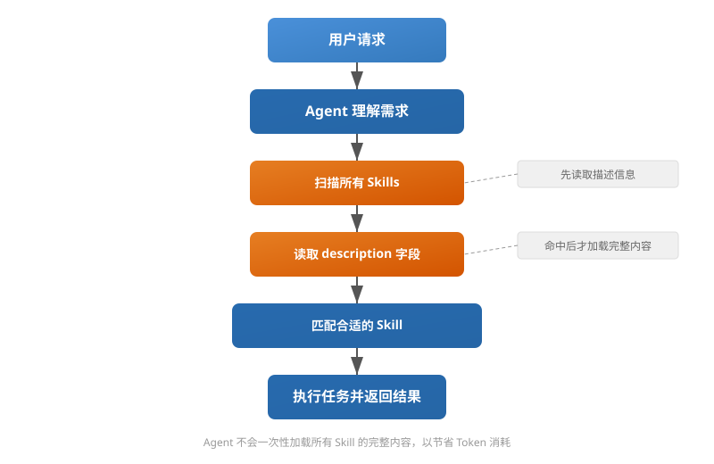

Skills ディレクトリ構造
Skill のディレクトリ構造と動作メカニズムを理解することは、保守可能で再利用可能な AI Agent 能力を構築する基礎です。
この記事では、標準的な Skill のディレクトリ構造、各ファイルの役割、完全なワークフローをゼロから分解します。
Skill とは
Skill は、特定の種類のタスクを完了するための独立した能力ユニットです。
Agent をオペレーティングシステムに例えるなら、Skill はアプリケーションのようなものです。Agent をプロジェクトマネージャーに例えるなら、Skill は呼び出すことのできる専門能力です。
Skill の一般的なタイプ
以下は典型的な Skill の適用シナリオです：
| タイプ | 説明 | 適用シナリオ |
|---|---|---|
| PDF ドキュメント分析 | PDF の内容を抽出し、要約を生成する | ドキュメント処理、情報抽出 |
| ウェブスクレイピング | Web ページのデータを自動的に取得する | データ収集、情報監視 |
| SQL最適化 | SQL クエリを分析および最適化する | データベースパフォーマンスのチューニング |
| データ統計 | データ計算と統計処理 | データ分析、レポート生成 |
| 画像認識 | 画像内のコンテンツを認識する | OCR、画像分類 |
Skill と Agent の関係
Skill 自体はいつ使用するかを決定する責任はなく、実際に決定を担当するのは Agent です。
完全なワークフローは次のとおりです：

重要なポイント：Agent はすべての Skill の完全な内容を一度に読み込みません。最初に各 Skill の説明情報を読み取り、ターゲットの Skill にヒットした後に完全な内容を読み込みます。この理由は、数百の Skill がある場合、毎回すべてを読み込むと Token を非常に浪費するからです。
Skill の標準ディレクトリ構造
完全な Skill は単一のファイルではなく、複数のファイルを含むディレクトリです。
以下は標準的な Skill の完全なディレクトリ構造です：
my-skill/ │ ├── SKILL.md ← 核心执行文件 ├── metadata.json ← 元信息 ├── examples/ ← 示例目录 │ ├── example1.md │ └── example2.md │ ├── scripts/ ← 可执行脚本 │ ├── main.py │ └── utils.py │ ├── resources/ ← 资源目录 │ ├── prompt.md │ └── config.yaml │ ├── tests/ ← 测试目录 │ ├── test_cases.md │ └── eval.yaml │ ├── README.md ← 使用说明 │ └── CHANGELOG.md ← 变更日志
次に、各ファイルとディレクトリの役割を一つずつ分解します。

SKILL.md：コア実行ファイル
これは Skill の中で最も重要なファイルであり、Skill のすべての実行ロジックを定義します。
これには以下の重要な情報が含まれます：
| 部分 | 説明 | 役割 |
|---|---|---|
| Description | Skill の機能説明 | Agent がマッチングに使用するため |
| When to use | 適用シナリオを明確にする | 誤発動を防ぐ |
| When NOT to use | 不適用シナリオを明確にする | 他の Skill との競合を防ぐ |
| Input | 入力形式を定義する | 呼び出し方法を標準化する |
| Instructions | 実行手順 | タスクの実行をガイドする |
| Output | 出力形式の説明 | 結果の一貫性を保証する |
以下は規範的な SKILL.md の例です：
例
## Description
PDF の内容を分析し、要約を生成するために使用します。
## When to use
適用対象：
- PDF の読み取り
- 要約の抽出
- コンテンツ分析
## When NOT to use
適用外：
- 画像編集
- 動画処理
## Input
PDF ファイル
## Instructions
1. テキストを抽出
2. 章構造を識別
3. 主要な内容を要約
4. 要点を出力
## Output
Markdown 形式の要約
よくある誤った書き方
多くの初心者はあまりにも簡略化された SKILL.md を書くことがあります。例えば：
推奨されない書き方
PDF を読み取る
内容を要約する
結果を返す
この書き方の問題は、いつ使用するかがわからない、いつ使用しないかがわからない、出力形式が不明確、他の Skill と競合しやすいことです。
合格な SKILL.md は、Agent がひと目で「この Skill が現在のタスクに適しているかどうか」を判断できるようにする必要があります。
metadata.json：Skill メタ情報
このファイルは、マシンが読み取り可能な構造化データを提供し、Agent が Skill をすばやく絞り込むのに役立ちます。
例
"name": "pdf-analyzer",
"version": "1.0.0",
"description": "PDF を分析し要約を生成する",
"tags": ["pdf", "summary"],
"category": "document"
}
一般的なフィールドの説明
| フィールド | 役割 | 重要度 |
|---|---|---|
| name | Skill 名 | 必須 |
| description | 機能説明。Agent はこれに基づいてマッチングを行う | 最も重要 |
| version | バージョン番号 | 推奨 |
| tags | タグ。検索を容易にする | 推奨 |
| category | カテゴリ | 任意 |
| author | 作者 | 任意 |
| permissions | 必要な権限 | 任意 |
この中でdescriptiondescription フィールドが最も重要であり、Agent は通常それに基づいてマッチングを行います。
マッチングプロセスはおおよそ次のとおりです：ユーザーがリクエストを出すと、Agent はすべての Skill の description をスキャンし、一致する説明を見つけた後に完全な Skill の内容を読み込んで実行します。
examples：サンプルディレクトリ
多くの開発者はこの部分を無視しますが、実際には非常に重要です。
ディレクトリ構造
examples/ ├── example1.md ├── example2.md
サンプルファイルの内容
例
この PDF を分析してください
出力：
# ドキュメント要約
## コアコンテンツ
1. ...
2. ...
3. ...
examples の役割
| 役割 | 説明 |
|---|---|
| Few-shot の例を提供する | モデルが例を通じて期待される動作を理解するのを助ける |
| 出力形式を標準化する | 例を通じて出力構造とスタイルを明確にする |
| 出力の安定性を向上させる | ランダムな振る舞いを減らし、結果をより予測可能にする |
経験上、良い examples はプロンプトを増やすよりも効果的であることが多いです。
scripts：実行可能スクリプト
Skill は単なるプロンプトではなく、実際の作業を完了するために実際にコードを実行する必要がある場合があります。
スクリプトが必要となる一般的なシナリオには、PDF の読み取り、OCR の実行、データベースの呼び出し、データ処理、グラフ生成などがあります。
ディレクトリ構造
scripts/ ├── main.py └── utils.py
Python スクリプトの例
例
# 機能：PDF ファイルからテキスト内容を抽出する
from pypdf import PdfReader
# PDF ファイルを開く
reader = PdfReader("demo.pdf")
# 抽出したテキストを保存する
text = ""
# 各ページをループしてテキストを抽出する
for page in reader.pages:
text += page.extract_text()
# すべてのテキスト内容を出力する
print(text)
Skill のワークフローは：ファイルを読み込む → スクリプトを実行する → 結果を取得する、その後結果を大規模言語モデルに処理させる。
resources：リソースディレクトリ
補助コンテンツを保存し、設定とコードを分離するために使用します。
ディレクトリ構造
resources/ ├── prompt.md ├── config.yaml
含まれる可能性のあるリソースタイプ
| リソースタイプ | 説明 | 例 |
|---|---|---|
| プロンプトテンプレート | 再利用可能なプロンプトテンプレート | prompt.md |
| 設定ファイル | パラメータと設定 | config.yaml |
| テキストテンプレート | メール、レポートテンプレート | template.txt |
| 画像リソース | アイコン、図解 | logo.png |
| SQLテンプレート | 定義済みのクエリテンプレート | query.sql |
設定ファイルの例
例
# サマリー関連設定
max_length: 1000 # サマリー最大長（文字数）
language: zh # 出力言語：zh=中国語, en=英語
設定を独立したファイルに置くことで、今後パラメータを変更する際にコードを変更する必要がなくなります。
tests：テストディレクトリ
成熟したプロジェクトには通常テストが含まれており、Skill の効果と安定性を検証します。
ディレクトリ構造
tests/ ├── test_cases.md └── eval.yaml
テストケースの例
例
入力：
PDFを分析して
期待：
サマリーを出力する
重要なポイントを含む
テストの役割
| 役割 | 説明 |
|---|---|
| 効果の検証 | Skill の出力が期待どおりであることを確認する |
| 回帰テスト | 修正後に既存機能に影響がないことを検証する |
| 自動評価 | 自動化フローと組み合わせて一括テストする |
| A/B テスト | 異なるバージョンの出力品質を比較する |
テストのない Skill は「一文を変更しただけで、既存機能が突然使えなくなる」という問題が発生しやすいです。
README：使用方法
README は開発者向けで、この Skill のインストール方法と使用方法を説明します。
例
skills ディレクトリにコピーする
# 使用方法
PDFをアップロードする
# 出力形式
Markdown
これが解決する核心的な問題は：後で自分が書いた Skill の使い方が自分でもわからなくなることです。
完全な例：PDF 分析 Skill
以下では完全な例を使って上記のすべての概念を結びつけます。
ディレクトリ構造の概要
pdf-analyzer/ ├── SKILL.md ├── metadata.json ├── examples/ │ └── summary.md ├── scripts/ │ └── extract.py ├── tests/ │ └── eval.md └── README.md
完全な呼び出しフロー
用户：
上传 PDF 并总结
↓
Agent：
扫描所有 Skills
↓
发现：
description: 分析 PDF 并生成摘要
↓
命中 pdf-analyzer
↓
读取 SKILL.md
↓
调用 extract.py
↓
提取 PDF 内容
↓
生成摘要
↓
返回结果
なぜ Skill をディレクトリ構造にするのか
多くの人が疑問に思うでしょう：なぜ1つの prompt.txt ですべてを済ませないのか？
理由は、規模が大きくなると制御不能になるからです。
単一ファイル方式の問題
| 問題 | 具体的な症状 |
|---|---|
| 保守が困難 | すべてのコンテンツが1つのファイルに詰め込まれ、修正が困難 |
| テストが不可能 | テストケースがないため、修正後も正常かどうかわからない |
| 再利用が不可能 | すべての Skill をゼロから書く必要がある |
| バージョン管理が不可能 | 変更履歴の追跡が難しい |
| 複数人での協業が不可能 | 1つのファイルを複数人が変更すると競合が発生しやすい |
ディレクトリ化方式の利点
| 利点 | 実現方法 |
|---|---|
| 保守が容易 | 各ファイルの役割が明確で、修正箇所を素早く特定できる |
| 再利用が可能 | スクリプトと設定は Skill 間で共有できる |
| テストが可能 | 独立したテストディレクトリで、自動化検証をサポート |
| 拡張が可能 | 新機能の追加はファイルを追加するだけでよい |
| 公開が可能 | ディレクトリをパッケージ化するだけで配布できる |
まとめ
Skill は本質的にプロンプトではなく、完全なソフトウェア能力パッケージです。
コアファイルの関係
SKILL.md
↓
定义行为
metadata.json
↓
定义信息
examples/
↓
定义示例
scripts/
↓
定义能力
tests/
↓
定义质量
README
↓
定义使用方式
その他の拡張プロンプトは一度の問題を解決するだけですが、Skill は能力を資産として蓄積します。